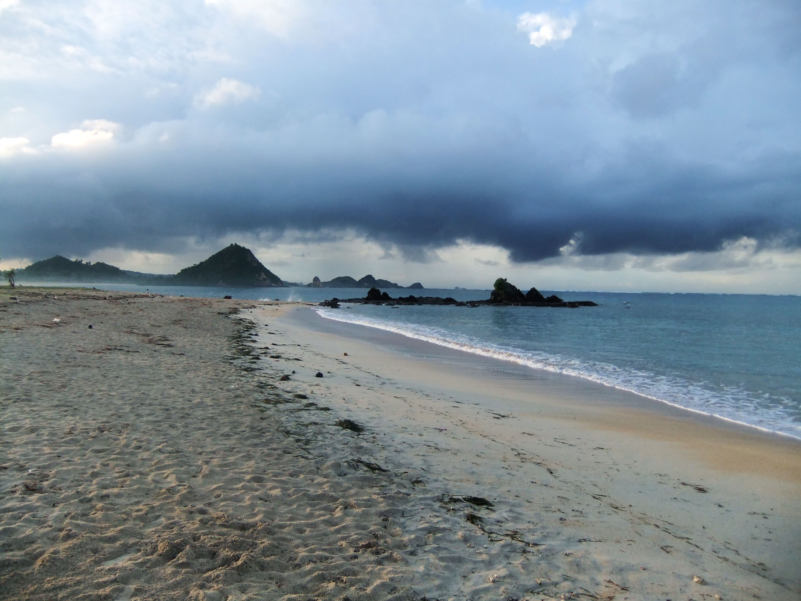

|  | Pantai Kuta, Lombok adalah tempat wisata di Pulau Lombok, Provinsi Nusa Tenggara Barat, Indonesia. Pantai dengan pasir berwarna putih seperti buliran merica ini terletak di Kawasan Ekonomi Khusus Mandalika di Desa Kuta. Pantai Kuta mulai dikenal dan dikembangkan sebagai destinasi wisata pada mulanya oleh PT. Rajawali Indonesia (BUMN, sekarang jadi ITDC) pada tahun 1970an. Pantai Kuta (Kute, ejaan lokal) memang terkenal dengan pasir putihnya yang berbeda dengan kebanyakan pantai di Indonesia. Pasir berwarna putih bak merica dengan garis pantai yang panjang menjadikan Kuta sebagai idola bagi para wisatawan domestik dan mancanegara. Selain pasir putihnya yang unik, Pantai Kuta juga memiliki Air lautnya yang sangat jernih hingga anda bisa melihat pemandangan bawah lautnya. Di Pantai Kuta Lombok terdapat bukit yang bernama Mandalika, adanya bukit ini menambah keindahan tersendiri. Nama ini diambil dari cerita kuno masyarakat setempat, tentang seorang putri bernama Mandalika. Putri Mandalika akhirnya melompat ke laut dari bukit ini, karena menghindari kejaran seorang pangeran yang hendak mempersuntingnya. Nah pada saat sekarang, bukit ini menjadi tempat yang paling tepat untuk menikmati pemandangan Kuta dari ketinggian. Jika Anda mencapai puncak Bukit Mandalika, Anda akan menemui pemandangan Pantai Kuta yang terbentang indah, dengan air lautnya yang bening. Bahkan Anda juga bisa melihat gugusan terumbu karangnya. Selain itu wilayah pantainya sangat aman untuk melakukan kegiatan air seperti mandi atau berenang, untuk anda yang suka olahraga air juga tersedia fasilitas seperti banana boat, windsurfer dan jetski. Ombak yang lumayan besar juga menjadikan tempat ini sebagai salah satu surga bagi para pecinta surfing baik itu para surfer lokal ataupun Non Lokal. Tidak di pungutnya biaya parkir dan biaya masuk dikarenakan tidak adanya campur tangan dari pemerintah daerah setempat. |